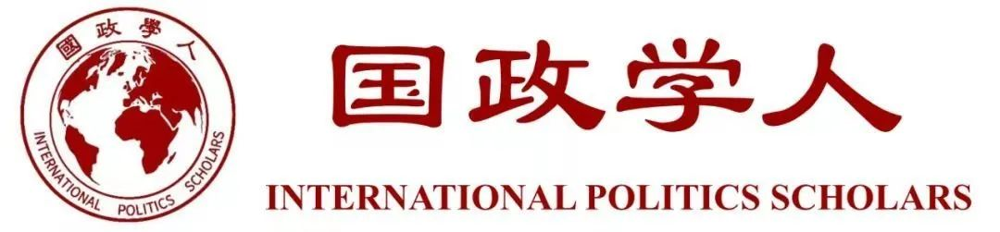

收录于合集

避免意识形态冲突应该是中美两国的关键任务
作品简介
【作者】 孟维瞻：复旦大学中国研究院、发展研究院助理研究员，国政学人学术公众平台主编。
【排版】 梁鑫昱
正文
中国改革开放40年后，一直在试图以一种“无意识形态”、“去价值观化”的方式和美国打交道，以控制中美对抗的烈度。美国对中国的价值观指责从未中断，但中国一直避免争论。这是中国国内长期坚持的“不争论”原则的延伸。但最近中美关系的发展趋势表明，这种状态可能已经难以维系。
新冠疫情爆发后，本来很多人期待中美会联手应对，以此契机改善中美关系，但这种期待落空了。两国的共同利益不足以掩盖双方在政治制度和发展模式方面的分歧。美国媒体报道说，一个本来最需要双方合作的问题却把中美关系送进了急救室，未来中美不容易再找到更能促进合作的领域。
有人指责中国外交部发言人言论过激，中国网络舆论出现了分裂。中美两国发生“媒体风波”，双方相互驱逐记者。但这两件事都并非孤立事件，原因来自于其他领域，不应孤立地评判外交部的做法是否正确。从某种程度上说，特朗普一直在回避价值观冲突，很少直接攻击中国的政治制度。但不幸的是，权力竞争因素和国内政治因素使得双方避免价值观的努力变得无效。这两个风波只是刚刚开始，类似的较量可能还会持续。两国将会形成权力对比变化之外的另一种“结构性矛盾”。
中美两国应对疫情的成效，各有不同。仁者见仁、智者见智。但是，对抗疫效果的评价不会取决于成效，而是取决于是否符合本国价值观。在西方主流观点看来，无论中国取得什么成绩，他们都会拒绝承认。在意识形态的作用下，双方舆论中的阴谋论都超过了对科学原则的信仰，他们并不在意说的话是否符合科学。美国国务卿、国会议员相继说出完全违背科学常识的观点。
** 01**
意识形态冲突是历史上大国竞争的常态现象
历史上的权力转移或者大国纷争一般均伴随着意识形态冲突。例如17世纪的天主教与新教之争，18世纪末开始的“正统”与“革命”之争。一战的爆发既有国家利益的分歧，也有君主政体与共和政体之争。20世纪自由主义、共产主义和法西斯主义的较量则是意识形态竞争的顶点。宗教、政治制度、发展模式的不同均可以引起意识形态冲突。近代史上，除了争夺领土和殖民地之外，国家实力的竞争往往需要意识形态竞争来提供合法性。今天的中美关系可能很难成为例外，尽管中国过去40年的内政外交均表现为争取“无意识形态”和“去价值观化”。
中美之间的冲突不会表现为美苏那样的争霸模式，但权力竞争会激起发展模式的冲突。中国过去40年的成就，本质上是中国特殊模式取得的成就。美国一方面对自由市场模式很自信，但又非常担心中国独特的模式继续推动中国实力的增长。美国很希望看到中国模式的失败，但又似乎没有信心预言它一定会失败。美国希望中国接受美国的模式，让中国遵守美国占主动地位的游戏规则，目的是延缓中国的发展速度。
** 02**
中国可以主观上避免意识形态冲突吗？
中美之间意识形态冲突的不可调和，表现为中国维护统一和美国维护所谓“自由民主”价值观的尖锐对立。以前中国实力并不强的时候，美国可以忍耐和接受中国对台湾问题的立场和诉求。但今天，两岸邦交国之争、中国大陆在国际组织中维护“一个中国”原则的斗争，都被美国视为对“自由民主人权”价值观的侵犯。中国应该保持克制，但是当美国侵犯了中国核心利益的时候，恐怕中国难以保持克制。乔治·华盛顿大学的沈大伟教授曾警告“美国不可以容忍中国以台湾问题为借口将价值观输出到其他地区，中国必须停止在国际范围内干预台湾事务”。香港问题隐藏着更大的危机，随时会成为中美意识形态冲突的导火索。此外，美国国内出现各种问题，行政当局为了逃避责任，会不断加剧对中国的指责，尽管他们很清楚中国并不是真正的原因。
绝大多数中国学者可能主张，中国应该避免与美国的意识形态冲突，即使在美国对中国发动意识形态攻击的情况下中国仍然应该谨慎应对。这种说法没有错误，中国过去也是这么做的。但是在实践上，随着中国实力的崛起，意识形态冲突也表现为“结构性”特征。中国维护统一的原则，决定中国必须在国际组织中与“台独”势力作斗争，必须拒绝答应“港独”分子提出的所谓“双普选”要求。但中国的做法被美国视为对核心价值观的挑衅，因此美国国会近期出台了一系列涉台、涉港法案。中国人民和政府维护祖国统一的决心是高度一致的、坚定的，但美国两党维护他们的核心价值观的决心也是高度一致的、坚定的。过去北京可以为了争取美国的善意而容忍美国，但是现在北京只能去维护它所界定的国家核心利益。
很多人认为，中国只有继续推动改革开放，才可以缓解与美国的关系。这种说法完全正确。但是在实践上，这已经不具有缓解与美国关系的可能性。美国所界定的“开放”，并不是中国所希望的开放。很多领域中国目前是不能开放的，中国不会容忍那些危害政治安全的开放。但是中国在这些领域不开放，就无法符合美国的要求。
改革也已经很困难。改革分为政治和经济维度。政治改革在1990年之后就已经不再符合美国的期待；经济改革在2001年之后不再符合美国的期待，“压舱石”起的作用越来越小，到奥巴马第二任期已经引发严重的贸易冲突。中国未来的政治和经济改革有一定空间，中国也认为自己必须继续改革，但是这个改革不足以让美国满意。
也有很多人认为，中国应该拥抱自由主义秩序，在特朗普破坏自由主义秩序的情况下中国不应该颠覆而是应该继续支持这个秩序，使其符合中国的发展利益。这种说法没有错误，因为中国最近40年的确是自由主义秩序的受益者，未来中国也没有能力对自由主义规则做出根本性的改变。但是，中美对自由主义的理解几乎是对立的。中国希望利用自由秩序使自己变得更加强大，但不允许国际自由秩序影响到中国内部的政治秩序。美国则不愿意看到这个结果，如果中国国内不接受自由主义秩序，那么就不希望中国继续享受国际自由秩序带来的红利，要让中国与自由主义“脱钩”。过去，自由主义可能是两国心照不宣的默契，但两国意识形态矛盾的加剧，使得这个默契正在被打破。
** 03**
美国对中国从“期待”到“失望”
有人会问，中美意识形态的分歧和斗争，这70年不是一直存在吗？是的。但是今天的激烈程度，是过去不能比的。过去的将近40多年里，尽管双方的意识形态、政治制度完全不同，但是美国一直对中国抱有“期待”，它认为中国最终会走上美国希望的道路。这是中美长期“友好”至少是表面上“友好”的基础。美国对华政策的理论基础有很多，如“接触演变论”、“和平更迭论”、“政权崩溃论”、“长期衰退论”，如果有任何一个还能站得住脚，那么美国对中国的敌意就是有限的。但是今天的中国是美国最不愿看到的局面——这是一个与美国有根本不同但是却充满活力的模式，美国对中国的不安全感越来越大，但是目前却依赖它的供应链和市场，美国对中国已经几乎绝望但是依然不得不与它打交道。
从中国角度来看，主流精英都知道美国的实力、地位和重要性，承认40年来美国对中国的帮助是很大的，领导人也非常清楚“没有一条理由把中美关系搞坏”。但是，中国拿不出改善中美关系的筹码，政治和经济问题上都无法退让。如果中国能牺牲一部分利益来换取美国对中国的善意，或许是非常值得的，但是现在已经与1992年的局面完全不同。中美之外的其他国家，可能认为对特朗普让步更符合它们的国家利益；但是对中国来说，经过仔细的权衡，可能认为对美国的让步将会给自己带来更大的损失。
中美意识形态冲突的加剧，还表现为近期双方在媒体和学术领域的一系列斗争，在以前这是根本没有的现象。我们都知道，中美两国的知识界是相对比较了解对方的群体，他们是维持两国友好的重要力量。历史上美国政府曾经多次试图改变对中国的“接触”政策，但由于知识界的坚决反对而被迫搁置，鹰派学者长期被主流排挤甚至压制。但转折点开始于2018年下半年。根据《纽约时报》一篇报道，数十位中国学者被取消了赴美十年签证。实际上这些中国学者绝大多数是公认的对美国友好的学者，长期坚持反对激进的民族主义。加州大学圣迭戈分校教授谢淑丽（Susan Shirk）认为名单上的学者是“最了解美国的群体”。更明显的例子是中国留学生和华裔科学家在美国遭到严厉打压，签证被威胁取消。这些中国人和华裔都是对美国非常友好的，他们喜欢美国、向往美国，因此选择在美国留学和定居。人文交流作为维系中美关系的最后一根支柱也在受到破坏。
另一个重要的事件是2019年6月美国报纸刊载的《百人信》，百位美国精英呼吁“中国不是敌人”，但是这封信在中国引发了强烈的批评。不少人认为这些人要比美国鹰派更坏，比特朗普更坏。这些人的“友好”本质上是对中国的不尊重，还寄托于改变中国政治体制的幻想。2020年2月－3月，中国驱逐了几家美国媒体的三名记者，使得蓬佩奥这样的极端鹰派成为受益者，正中其圈套。虽然美国媒体长期以来不尊重中国，但是《华尔街日报》、《纽约时报》的文章有三分之一对中国是比较友善的。长期来看，友好力量在两国会越来越难以生存，他们不仅被自己国家的民众所误解，也被对方所误解。知识界的缓冲作用将不复存在，他们不得不支持本国政府的强硬政策，或者不得不保持沉默。这是非常不幸的事情。
类似于新冠病毒引起的外交纷争，不会是最后一次，未来可能会继续。中美意识形态冲突难以避免，中国国际关系学和国际关系理论长期以来的“去价值观化”风格，未来可能会发生转变。但这不代表我们不应该尽量争取中美关系的友好。即使两国关系不能“好起来”，我们也要争取它“不要太坏”。维护中美关系“斗而不破”符合中国的利益，但目前局势比较悲观，我们很少看到能实质性改善中美关系的观点。
** 本文首发于“国政学人”微信平台**
近期热门文章
【国际秩序】伊肯伯里：为何自由国际秩序将会幸存 | 国政学人 第361期
【重磅】约瑟夫·奈等预测：新冠疫情之后，世界将何去何从？| 国政学人 第362期
【选举政治】存在伊斯兰主义的政治优势吗？| 国政学人 第363期
【重磅评论】格雷厄姆·艾利森：抗击冠状病毒：中国是敌是友？| 国政学人 第364期